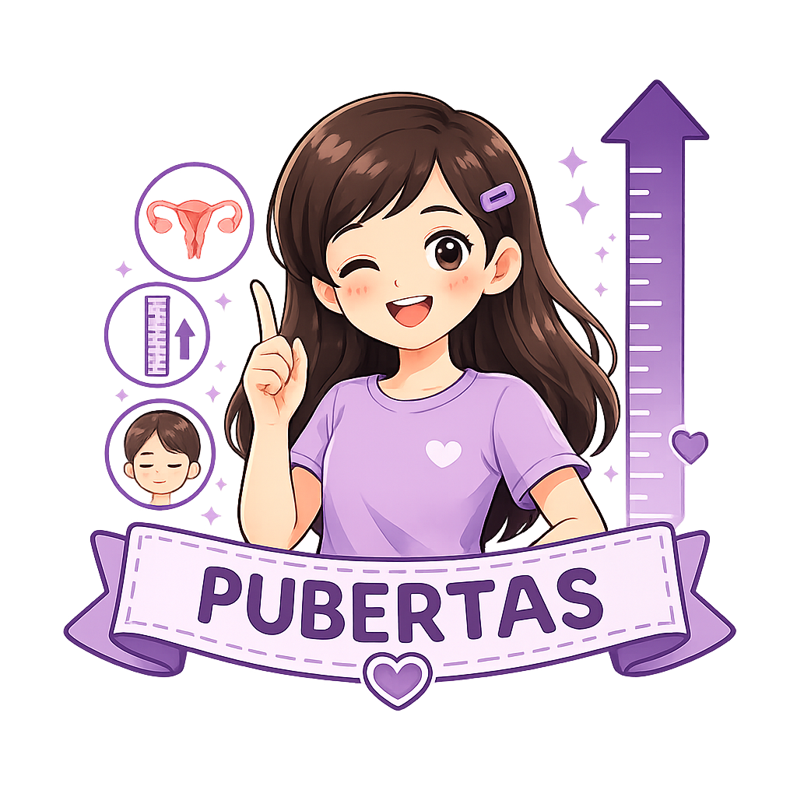

Pubertas adalah masa ketika anak mulai berkembang menjadi dewasa secara fisik, emosional, dan reproduksi. Memahami perubahan yang terjadi pada masa pubertas akan membantu remaja putri menerima perubahan tubuh dengan percaya diri serta menjaga kesehatan secara optimal.

Kenali perubahan tubuh, pikiran, dan emosi selama masa pubertas.
Pubertas adalah masa peralihan dari anak menuju dewasa yang ditandai dengan perubahan fisik, hormonal, emosional, dan sosial. Pada remaja putri, pubertas umumnya dimulai pada usia 8–13 tahun, meskipun waktu terjadinya dapat berbeda pada setiap individu (Suryana, E., Hasdikurniati, A. I., Harmayanti, A. A., & Harto, K., 2022)
Selain perubahan fisik, pubertas juga memengaruhi kondisi emosional. Remaja dapat mengalami perubahan suasana hati (mood swing), menjadi lebih sensitif, mudah cemas, atau ingin lebih mandiri. Hal ini merupakan proses yang normal karena dipengaruhi oleh perubahan hormon dan perkembangan otak (Kementerian Kesehatan Republik Indonesia 2026).
Memahami pubertas membantu remaja putri menerima perubahan tubuh sebagai proses yang normal. Pengetahuan yang baik juga dapat meningkatkan rasa percaya diri, membantu menjaga kesehatan reproduksi, serta mencegah kesalahpahaman akibat berbagai mitos yang beredar.
Jika terdapat perubahan yang dirasa tidak biasa atau menimbulkan kekhawatiran, jangan ragu berkonsultasi dengan tenaga kesehatan.
Perubahan pada setiap remaja dapat berlangsung dengan waktu yang berbeda.
| Usia | Perkembangan |
|---|---|
| 8–10 tahun | Awal pertumbuhan payudara pada sebagian remaja. |
| 10–12 tahun | Pertumbuhan tinggi badan lebih cepat dan mulai tumbuh rambut halus. |
| 11–14 tahun | Pinggul melebar, muncul jerawat, keringat lebih banyak, dan menstruasi pertama dapat terjadi. |
| 14–16 tahun | Organ reproduksi semakin matang dan siklus menstruasi mulai lebih teratur. |
| 16–18 tahun | Pertumbuhan fisik hampir selesai dan tubuh mencapai kematangan reproduksi. |
Pubertas datang lebih cepat karena sering makan ayam.
Jerawat muncul karena wajah jarang dicuci saja.
Menstruasi pertama berarti tubuh sudah siap untuk hamil.
Waktu pubertas dipengaruhi oleh faktor genetik, hormon, status gizi, dan kesehatan, bukan hanya jenis makanan tertentu.
Jerawat dipengaruhi oleh perubahan hormon, produksi minyak berlebih, bakteri, dan kebersihan kulit.
Menstruasi pertama menandakan organ reproduksi mulai berfungsi, tetapi remaja masih memerlukan pertumbuhan fisik dan mental menuju kedewasaan.
Pelajari perubahan tubuh selama masa pubertas melalui video edukasi.
Unduh infografis mengenai pubertas sebagai media belajar mandiri.
Download Infografis